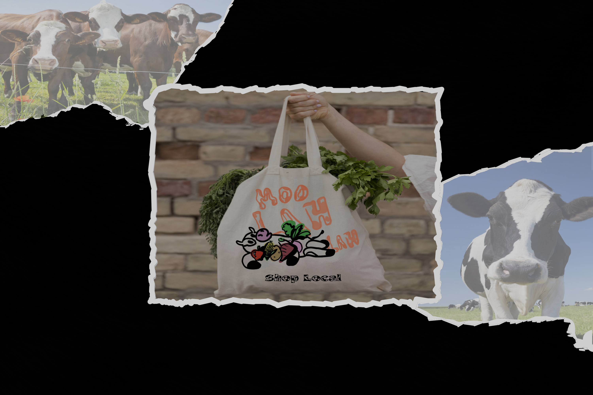
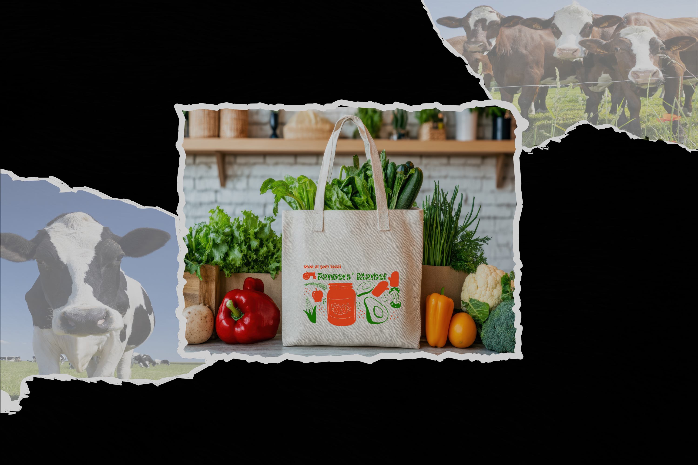
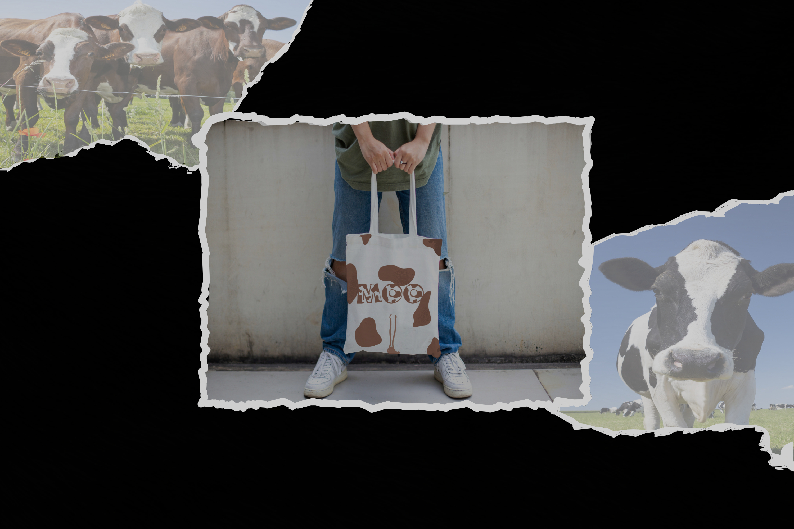

This marker represents the playful spirit of Moo Lah Lah—bold, round, and full of personality.
Designed to complement the typeface, the marker icon is a visual anchor for branding, signage, and interactive elements. It’s not just a graphic—it’s a character.
Whether used on packaging, websites, or print materials, the Moo Lah Lah marker adds a touch of whimsy and recognition to your design system.
The marker page is designed to showcase multiple images in a carousel above, while this section provides context and storytelling below. Scroll snapping ensures each section feels distinct and immersive.